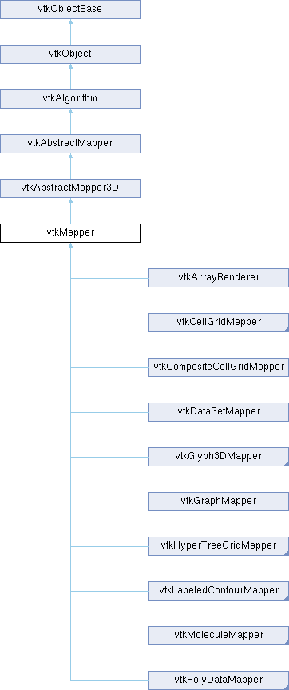

|
Etrek
|
|
Etrek
|
abstract class specifies interface to map data to graphics primitives More...
#include <vtkMapper.h>

Public Member Functions | |
| vtkTypeMacro (vtkMapper, vtkAbstractMapper3D) | |
| void | PrintSelf (ostream &os, vtkIndent indent) override |
| void | ShallowCopy (vtkAbstractMapper *m) override |
| vtkMTimeType | GetMTime () override |
| virtual void | Render (vtkRenderer *ren, vtkActor *a)=0 |
| void | ReleaseGraphicsResources (vtkWindow *) override |
| virtual void | CreateDefaultLookupTable () |
| const char * | GetColorModeAsString () |
| vtkSetMacro (ScalarMode, int) | |
| vtkGetMacro (ScalarMode, int) | |
| void | SetScalarModeToDefault () |
| void | SetScalarModeToUsePointData () |
| void | SetScalarModeToUseCellData () |
| void | SetScalarModeToUsePointFieldData () |
| void | SetScalarModeToUseCellFieldData () |
| void | SetScalarModeToUseFieldData () |
| vtkSetMacro (FieldDataTupleId, vtkIdType) | |
| vtkGetMacro (FieldDataTupleId, vtkIdType) | |
| vtkGetStringMacro (ArrayName) | |
| vtkSetStringMacro (ArrayName) | |
| vtkGetMacro (ArrayId, int) | |
| vtkSetMacro (ArrayId, int) | |
| vtkGetMacro (ArrayAccessMode, int) | |
| vtkSetMacro (ArrayAccessMode, int) | |
| vtkGetMacro (ArrayComponent, int) | |
| vtkSetMacro (ArrayComponent, int) | |
| const char * | GetScalarModeAsString () |
| double * | GetBounds () VTK_SIZEHINT(6) override |
| void | GetBounds (double bounds[6]) override |
| void | SetRenderTime (double time) |
| vtkGetMacro (RenderTime, double) | |
| vtkDataSet * | GetInput () |
| virtual bool | GetSupportsSelection () |
| virtual void | ProcessSelectorPixelBuffers (vtkHardwareSelector *, std::vector< unsigned int > &, vtkProp *) |
| virtual int | CanUseTextureMapForColoring (vtkDataObject *input) |
| void | ClearColorArrays () |
| vtkUnsignedCharArray * | GetColorMapColors () |
| vtkFloatArray * | GetColorCoordinates () |
| vtkImageData * | GetColorTextureMap () |
| void | SetLookupTable (vtkScalarsToColors *lut) |
| vtkScalarsToColors * | GetLookupTable () |
| vtkSetMacro (ScalarVisibility, vtkTypeBool) | |
| vtkGetMacro (ScalarVisibility, vtkTypeBool) | |
| vtkBooleanMacro (ScalarVisibility, vtkTypeBool) | |
| vtkSetMacro (Static, vtkTypeBool) | |
| vtkGetMacro (Static, vtkTypeBool) | |
| vtkBooleanMacro (Static, vtkTypeBool) | |
| vtkSetMacro (ColorMode, int) | |
| vtkGetMacro (ColorMode, int) | |
| void | SetColorModeToDefault () |
| void | SetColorModeToMapScalars () |
| void | SetColorModeToDirectScalars () |
| vtkSetMacro (InterpolateScalarsBeforeMapping, vtkTypeBool) | |
| vtkGetMacro (InterpolateScalarsBeforeMapping, vtkTypeBool) | |
| vtkBooleanMacro (InterpolateScalarsBeforeMapping, vtkTypeBool) | |
| vtkSetMacro (UseLookupTableScalarRange, vtkTypeBool) | |
| vtkGetMacro (UseLookupTableScalarRange, vtkTypeBool) | |
| vtkBooleanMacro (UseLookupTableScalarRange, vtkTypeBool) | |
| vtkSetVector2Macro (ScalarRange, double) | |
| vtkGetVectorMacro (ScalarRange, double, 2) | |
| void | SelectColorArray (int arrayNum) |
| void | SelectColorArray (const char *arrayName) |
| void | ColorByArrayComponent (int arrayNum, int component) |
| void | ColorByArrayComponent (const char *arrayName, int component) |
| void | SetRelativeCoincidentTopologyPolygonOffsetParameters (double factor, double units) |
| void | GetRelativeCoincidentTopologyPolygonOffsetParameters (double &factor, double &units) |
| void | SetRelativeCoincidentTopologyLineOffsetParameters (double factor, double units) |
| void | GetRelativeCoincidentTopologyLineOffsetParameters (double &factor, double &units) |
| void | SetRelativeCoincidentTopologyPointOffsetParameter (double units) |
| void | GetRelativeCoincidentTopologyPointOffsetParameter (double &units) |
| void | GetCoincidentTopologyPolygonOffsetParameters (double &factor, double &units) |
| void | GetCoincidentTopologyLineOffsetParameters (double &factor, double &units) |
| void | GetCoincidentTopologyPointOffsetParameter (double &units) |
| vtkDataSet * | GetDataSetInput () |
| vtkDataSet * | GetInputAsDataSet () |
| virtual vtkUnsignedCharArray * | MapScalars (double alpha) |
| virtual vtkUnsignedCharArray * | MapScalars (double alpha, int &cellFlag) |
| virtual vtkUnsignedCharArray * | MapScalars (vtkDataSet *input, double alpha) |
| virtual vtkUnsignedCharArray * | MapScalars (vtkDataSet *input, double alpha, int &cellFlag) |
| virtual bool | HasOpaqueGeometry () |
| virtual bool | HasTranslucentPolygonalGeometry () |
| vtkGetObjectMacro (Selection, vtkSelection) | |
| virtual void | SetSelection (vtkSelection *) |
| Public Member Functions inherited from vtkAbstractMapper3D | |
| vtkTypeMacro (vtkAbstractMapper3D, vtkAbstractMapper) | |
| double | GetLength () |
| virtual vtkTypeBool | IsARayCastMapper () |
| virtual vtkTypeBool | IsARenderIntoImageMapper () |
| void | GetClippingPlaneInDataCoords (vtkMatrix4x4 *propMatrix, int i, double planeEquation[4]) |
| double * | GetCenter () VTK_SIZEHINT(3) |
| void | GetCenter (double center[3]) |
| Public Member Functions inherited from vtkAbstractMapper | |
| vtkTypeMacro (vtkAbstractMapper, vtkAlgorithm) | |
| void | SetClippingPlanes (vtkPlanes *planes) |
| int | GetNumberOfClippingPlanes () |
| vtkGetMacro (TimeToDraw, double) | |
| void | AddClippingPlane (vtkPlane *plane) |
| void | RemoveClippingPlane (vtkPlane *plane) |
| void | RemoveAllClippingPlanes () |
| virtual void | SetClippingPlanes (vtkPlaneCollection *) |
| vtkGetObjectMacro (ClippingPlanes, vtkPlaneCollection) | |
| Public Member Functions inherited from vtkAlgorithm | |
| vtkTypeMacro (vtkAlgorithm, vtkObject) | |
| vtkTypeBool | HasExecutive () |
| vtkExecutive * | GetExecutive () |
| virtual void | SetExecutive (vtkExecutive *executive) |
| virtual vtkTypeBool | ProcessRequest (vtkInformation *request, vtkInformationVector **inInfo, vtkInformationVector *outInfo) |
| vtkTypeBool | ProcessRequest (vtkInformation *request, vtkCollection *inInfo, vtkInformationVector *outInfo) |
| virtual int | ComputePipelineMTime (vtkInformation *request, vtkInformationVector **inInfoVec, vtkInformationVector *outInfoVec, int requestFromOutputPort, vtkMTimeType *mtime) |
| virtual int | ModifyRequest (vtkInformation *request, int when) |
| vtkInformation * | GetInputPortInformation (int port) |
| vtkInformation * | GetOutputPortInformation (int port) |
| int | GetNumberOfInputPorts () |
| int | GetNumberOfOutputPorts () |
| void | SetAbortExecuteAndUpdateTime () |
| void | UpdateProgress (double amount) |
| bool | CheckAbort () |
| vtkInformation * | GetInputArrayInformation (int idx) |
| void | RemoveAllInputs () |
| vtkDataObject * | GetOutputDataObject (int port) |
| vtkDataObject * | GetInputDataObject (int port, int connection) |
| virtual void | RemoveInputConnection (int port, vtkAlgorithmOutput *input) |
| virtual void | RemoveInputConnection (int port, int idx) |
| virtual void | RemoveAllInputConnections (int port) |
| virtual void | SetInputDataObject (int port, vtkDataObject *data) |
| virtual void | SetInputDataObject (vtkDataObject *data) |
| virtual void | AddInputDataObject (int port, vtkDataObject *data) |
| virtual void | AddInputDataObject (vtkDataObject *data) |
| vtkAlgorithmOutput * | GetOutputPort (int index) |
| vtkAlgorithmOutput * | GetOutputPort () |
| int | GetNumberOfInputConnections (int port) |
| int | GetTotalNumberOfInputConnections () |
| vtkAlgorithmOutput * | GetInputConnection (int port, int index) |
| vtkAlgorithm * | GetInputAlgorithm (int port, int index, int &algPort) |
| vtkAlgorithm * | GetInputAlgorithm (int port, int index) |
| vtkAlgorithm * | GetInputAlgorithm () |
| vtkExecutive * | GetInputExecutive (int port, int index) |
| vtkExecutive * | GetInputExecutive () |
| vtkInformation * | GetInputInformation (int port, int index) |
| vtkInformation * | GetInputInformation () |
| vtkInformation * | GetOutputInformation (int port) |
| virtual vtkTypeBool | Update (int port, vtkInformationVector *requests) |
| virtual vtkTypeBool | Update (vtkInformation *requests) |
| virtual int | UpdatePiece (int piece, int numPieces, int ghostLevels, const int extents[6]=nullptr) |
| virtual VTK_UNBLOCKTHREADS int | UpdateExtent (const int extents[6]) |
| virtual VTK_UNBLOCKTHREADS int | UpdateTimeStep (double time, int piece=-1, int numPieces=1, int ghostLevels=0, const int extents[6]=nullptr) |
| virtual VTK_UNBLOCKTHREADS void | UpdateInformation () |
| virtual void | UpdateDataObject () |
| virtual void | PropagateUpdateExtent () |
| virtual VTK_UNBLOCKTHREADS void | UpdateWholeExtent () |
| void | ConvertTotalInputToPortConnection (int ind, int &port, int &conn) |
| vtkGetObjectMacro (Information, vtkInformation) | |
| virtual void | SetInformation (vtkInformation *) |
| bool | UsesGarbageCollector () const override |
| vtkSetMacro (AbortExecute, vtkTypeBool) | |
| vtkGetMacro (AbortExecute, vtkTypeBool) | |
| vtkBooleanMacro (AbortExecute, vtkTypeBool) | |
| vtkGetMacro (Progress, double) | |
| void | SetContainerAlgorithm (vtkAlgorithm *containerAlg) |
| vtkAlgorithm * | GetContainerAlgorithm () |
| vtkSetMacro (AbortOutput, bool) | |
| vtkGetMacro (AbortOutput, bool) | |
| void | SetProgressShiftScale (double shift, double scale) |
| vtkGetMacro (ProgressShift, double) | |
| vtkGetMacro (ProgressScale, double) | |
| void | SetProgressText (const char *ptext) |
| vtkGetStringMacro (ProgressText) | |
| vtkGetMacro (ErrorCode, unsigned long) | |
| void | SetInputArrayToProcess (const char *name, int fieldAssociation) |
| virtual void | SetInputArrayToProcess (int idx, int port, int connection, int fieldAssociation, const char *name) |
| virtual void | SetInputArrayToProcess (int idx, int port, int connection, int fieldAssociation, int fieldAttributeType) |
| virtual void | SetInputArrayToProcess (int idx, vtkInformation *info) |
| virtual void | SetInputArrayToProcess (int idx, int port, int connection, const char *fieldAssociation, const char *attributeTypeorName) |
| virtual void | SetInputConnection (int port, vtkAlgorithmOutput *input) |
| virtual void | SetInputConnection (vtkAlgorithmOutput *input) |
| virtual void | AddInputConnection (int port, vtkAlgorithmOutput *input) |
| virtual void | AddInputConnection (vtkAlgorithmOutput *input) |
| virtual VTK_UNBLOCKTHREADS void | Update (int port) |
| virtual VTK_UNBLOCKTHREADS void | Update () |
| virtual void | SetReleaseDataFlag (vtkTypeBool) |
| virtual vtkTypeBool | GetReleaseDataFlag () |
| void | ReleaseDataFlagOn () |
| void | ReleaseDataFlagOff () |
| int | UpdateExtentIsEmpty (vtkInformation *pinfo, vtkDataObject *output) |
| int | UpdateExtentIsEmpty (vtkInformation *pinfo, int extentType) |
| int * | GetUpdateExtent () VTK_SIZEHINT(6) |
| int * | GetUpdateExtent (int port) VTK_SIZEHINT(6) |
| void | GetUpdateExtent (int &x0, int &x1, int &y0, int &y1, int &z0, int &z1) |
| void | GetUpdateExtent (int port, int &x0, int &x1, int &y0, int &y1, int &z0, int &z1) |
| void | GetUpdateExtent (int extent[6]) |
| void | GetUpdateExtent (int port, int extent[6]) |
| int | GetUpdatePiece () |
| int | GetUpdatePiece (int port) |
| int | GetUpdateNumberOfPieces () |
| int | GetUpdateNumberOfPieces (int port) |
| int | GetUpdateGhostLevel () |
| int | GetUpdateGhostLevel (int port) |
| void | SetProgressObserver (vtkProgressObserver *) |
| vtkGetObjectMacro (ProgressObserver, vtkProgressObserver) | |
| Public Member Functions inherited from vtkObject | |
| vtkBaseTypeMacro (vtkObject, vtkObjectBase) | |
| virtual void | DebugOn () |
| virtual void | DebugOff () |
| bool | GetDebug () |
| void | SetDebug (bool debugFlag) |
| virtual void | Modified () |
| void | PrintSelf (ostream &os, vtkIndent indent) override |
| void | RemoveObserver (unsigned long tag) |
| void | RemoveObservers (unsigned long event) |
| void | RemoveObservers (const char *event) |
| void | RemoveAllObservers () |
| vtkTypeBool | HasObserver (unsigned long event) |
| vtkTypeBool | HasObserver (const char *event) |
| vtkTypeBool | InvokeEvent (unsigned long event) |
| vtkTypeBool | InvokeEvent (const char *event) |
| std::string | GetObjectDescription () const override |
| unsigned long | AddObserver (unsigned long event, vtkCommand *, float priority=0.0f) |
| unsigned long | AddObserver (const char *event, vtkCommand *, float priority=0.0f) |
| vtkCommand * | GetCommand (unsigned long tag) |
| void | RemoveObserver (vtkCommand *) |
| void | RemoveObservers (unsigned long event, vtkCommand *) |
| void | RemoveObservers (const char *event, vtkCommand *) |
| vtkTypeBool | HasObserver (unsigned long event, vtkCommand *) |
| vtkTypeBool | HasObserver (const char *event, vtkCommand *) |
| template<class U, class T> | |
| unsigned long | AddObserver (unsigned long event, U observer, void(T::*callback)(), float priority=0.0f) |
| template<class U, class T> | |
| unsigned long | AddObserver (unsigned long event, U observer, void(T::*callback)(vtkObject *, unsigned long, void *), float priority=0.0f) |
| template<class U, class T> | |
| unsigned long | AddObserver (unsigned long event, U observer, bool(T::*callback)(vtkObject *, unsigned long, void *), float priority=0.0f) |
| vtkTypeBool | InvokeEvent (unsigned long event, void *callData) |
| vtkTypeBool | InvokeEvent (const char *event, void *callData) |
| virtual void | SetObjectName (const std::string &objectName) |
| virtual std::string | GetObjectName () const |
| Public Member Functions inherited from vtkObjectBase | |
| const char * | GetClassName () const |
| virtual vtkTypeBool | IsA (const char *name) |
| virtual vtkIdType | GetNumberOfGenerationsFromBase (const char *name) |
| virtual void | Delete () |
| virtual void | FastDelete () |
| void | InitializeObjectBase () |
| void | Print (ostream &os) |
| void | Register (vtkObjectBase *o) |
| virtual void | UnRegister (vtkObjectBase *o) |
| int | GetReferenceCount () |
| void | SetReferenceCount (int) |
| bool | GetIsInMemkind () const |
| virtual void | PrintHeader (ostream &os, vtkIndent indent) |
| virtual void | PrintTrailer (ostream &os, vtkIndent indent) |
Static Public Member Functions | |
| static vtkSmartPointer< vtkImageData > | BuildColorTextureImage (vtkScalarsToColors *lkup, int colorMode) |
| static void | SetResolveCoincidentTopology (int val) |
| static int | GetResolveCoincidentTopology () |
| static void | SetResolveCoincidentTopologyToDefault () |
| static void | SetResolveCoincidentTopologyToOff () |
| static void | SetResolveCoincidentTopologyToPolygonOffset () |
| static void | SetResolveCoincidentTopologyToShiftZBuffer () |
| static void | SetResolveCoincidentTopologyPolygonOffsetParameters (double factor, double units) |
| static void | GetResolveCoincidentTopologyPolygonOffsetParameters (double &factor, double &units) |
| static void | SetResolveCoincidentTopologyLineOffsetParameters (double factor, double units) |
| static void | GetResolveCoincidentTopologyLineOffsetParameters (double &factor, double &units) |
| static void | SetResolveCoincidentTopologyPointOffsetParameter (double units) |
| static void | GetResolveCoincidentTopologyPointOffsetParameter (double &units) |
| static void | SetResolveCoincidentTopologyPolygonOffsetFaces (int faces) |
| static int | GetResolveCoincidentTopologyPolygonOffsetFaces () |
| static void | SetResolveCoincidentTopologyZShift (double val) |
| static double | GetResolveCoincidentTopologyZShift () |
| Static Public Member Functions inherited from vtkAbstractMapper | |
| static vtkDataArray * | GetScalars (vtkDataSet *input, int scalarMode, int arrayAccessMode, int arrayId, const char *arrayName, int &cellFlag) |
| static vtkAbstractArray * | GetAbstractScalars (vtkDataSet *input, int scalarMode, int arrayAccessMode, int arrayId, const char *arrayName, int &cellFlag) |
| static vtkUnsignedCharArray * | GetGhostArray (vtkDataSet *input, int scalarMode, unsigned char &ghostsToSkip) |
| Static Public Member Functions inherited from vtkAlgorithm | |
| static vtkAlgorithm * | New () |
| static vtkInformationIntegerKey * | INPUT_IS_OPTIONAL () |
| static vtkInformationIntegerKey * | INPUT_IS_REPEATABLE () |
| static vtkInformationInformationVectorKey * | INPUT_REQUIRED_FIELDS () |
| static vtkInformationStringVectorKey * | INPUT_REQUIRED_DATA_TYPE () |
| static vtkInformationInformationVectorKey * | INPUT_ARRAYS_TO_PROCESS () |
| static vtkInformationIntegerKey * | INPUT_PORT () |
| static vtkInformationIntegerKey * | INPUT_CONNECTION () |
| static vtkInformationIntegerKey * | CAN_PRODUCE_SUB_EXTENT () |
| static vtkInformationIntegerKey * | CAN_HANDLE_PIECE_REQUEST () |
| static vtkInformationIntegerKey * | ABORTED () |
| static void | SetDefaultExecutivePrototype (vtkExecutive *proto) |
| Static Public Member Functions inherited from vtkObject | |
| static vtkObject * | New () |
| static void | BreakOnError () |
| static void | SetGlobalWarningDisplay (vtkTypeBool val) |
| static void | GlobalWarningDisplayOn () |
| static void | GlobalWarningDisplayOff () |
| static vtkTypeBool | GetGlobalWarningDisplay () |
| Static Public Member Functions inherited from vtkObjectBase | |
| static vtkTypeBool | IsTypeOf (const char *name) |
| static vtkIdType | GetNumberOfGenerationsFromBaseType (const char *name) |
| static vtkObjectBase * | New () |
| static void | SetMemkindDirectory (const char *directoryname) |
| static bool | GetUsingMemkind () |
Protected Member Functions | |
| void | MapScalarsToTexture (vtkAbstractArray *scalars, double alpha) |
| Protected Member Functions inherited from vtkObject | |
| void | RegisterInternal (vtkObjectBase *, vtkTypeBool check) override |
| void | UnRegisterInternal (vtkObjectBase *, vtkTypeBool check) override |
| void | InternalGrabFocus (vtkCommand *mouseEvents, vtkCommand *keypressEvents=nullptr) |
| void | InternalReleaseFocus () |
| Protected Member Functions inherited from vtkObjectBase | |
| virtual void | ReportReferences (vtkGarbageCollector *) |
| vtkObjectBase (const vtkObjectBase &) | |
| void | operator= (const vtkObjectBase &) |
Protected Attributes | |
| vtkUnsignedCharArray * | Colors |
| vtkTypeBool | InterpolateScalarsBeforeMapping |
| vtkFloatArray * | ColorCoordinates |
| vtkImageData * | ColorTextureMap |
| vtkScalarsToColors * | LookupTable |
| vtkTypeBool | ScalarVisibility |
| vtkTimeStamp | BuildTime |
| double | ScalarRange [2] |
| vtkTypeBool | UseLookupTableScalarRange |
| int | ColorMode |
| int | ScalarMode |
| double | RenderTime |
| int | ArrayId |
| char * | ArrayName |
| int | ArrayComponent |
| int | ArrayAccessMode |
| vtkIdType | FieldDataTupleId |
| vtkTypeBool | Static |
| double | CoincidentPolygonFactor |
| double | CoincidentPolygonOffset |
| double | CoincidentLineFactor |
| double | CoincidentLineOffset |
| double | CoincidentPointOffset |
| vtkSelection * | Selection = nullptr |
| Protected Attributes inherited from vtkAbstractMapper3D | |
| double | Bounds [6] |
| double | Center [3] |
| Protected Attributes inherited from vtkAbstractMapper | |
| vtkTimerLog * | Timer |
| double | TimeToDraw |
| vtkWindow * | LastWindow |
| vtkPlaneCollection * | ClippingPlanes |
| Protected Attributes inherited from vtkObject | |
| bool | Debug |
| vtkTimeStamp | MTime |
| vtkSubjectHelper * | SubjectHelper |
| std::string | ObjectName |
| Protected Attributes inherited from vtkObjectBase | |
| std::atomic< int32_t > | ReferenceCount |
| vtkWeakPointerBase ** | WeakPointers |
Additional Inherited Members | |
| Public Types inherited from vtkAlgorithm | |
| enum | DesiredOutputPrecision { SINGLE_PRECISION , DOUBLE_PRECISION , DEFAULT_PRECISION } |
| Public Attributes inherited from vtkAlgorithm | |
| enum vtkAlgorithm::DesiredOutputPrecision | RemoveNoPriorTemporalAccessInformationKey |
| std::atomic< vtkTypeBool > | AbortExecute |
| Static Protected Member Functions inherited from vtkObjectBase | |
| static vtkMallocingFunction | GetCurrentMallocFunction () |
| static vtkReallocingFunction | GetCurrentReallocFunction () |
| static vtkFreeingFunction | GetCurrentFreeFunction () |
| static vtkFreeingFunction | GetAlternateFreeFunction () |
abstract class specifies interface to map data to graphics primitives
vtkMapper is an abstract class to specify interface between data and graphics primitives. Subclasses of vtkMapper map data through a lookuptable and control the creation of rendering primitives that interface to the graphics library. The mapping can be controlled by supplying a lookup table and specifying a scalar range to map data through.
There are several important control mechanisms affecting the behavior of this object. The ScalarVisibility flag controls whether scalar data (if any) controls the color of the associated actor(s) that refer to the mapper. The ScalarMode ivar is used to determine whether scalar point data or cell data is used to color the object. By default, point data scalars are used unless there are none, in which cell scalars are used. Or you can explicitly control whether to use point or cell scalar data. Finally, the mapping of scalars through the lookup table varies depending on the setting of the ColorMode flag. See the documentation for the appropriate methods for an explanation.
Another important feature of the mapper is the ability to shift the z-buffer to resolve coincident topology. For example, if you'd like to draw a mesh with some edges a different color, and the edges lie on the mesh, this feature can be useful to get nice looking lines. (See the ResolveCoincidentTopology-related methods.)
|
static |
Create an image of the lookup table lkup.
|
virtual |
Returns if we can use texture maps for scalar coloring. Note this doesn't say we "will" use scalar coloring. It says, if we do use scalar coloring, we will use a texture. When rendering multiblock datasets, if any 2 blocks provide different lookup tables for the scalars, then also we cannot use textures. This case can be handled if required.
Reimplemented in vtkOpenGLBatchedPolyDataMapper, and vtkOpenGLLowMemoryBatchedPolyDataMapper.
| void vtkMapper::ClearColorArrays | ( | ) |
Call to force a rebuild of color result arrays on next MapScalars. Necessary when using arrays in the case of multiblock data.
| void vtkMapper::ColorByArrayComponent | ( | int | arrayNum, |
| int | component ) |
Legacy: These methods used to be used to specify the array component. It is better to do this in the lookup table.
|
virtual |
Create default lookup table. Generally used to create one when none is available with the scalar data.
|
overridevirtual |
Return bounding box (array of six doubles) of data expressed as (xmin,xmax, ymin,ymax, zmin,zmax).
Implements vtkAbstractMapper3D.
Reimplemented in vtkMoleculeMapper, and vtkPolyDataMapper.
|
inlineoverridevirtual |
Get the bounds for this mapper as (Xmin,Xmax,Ymin,Ymax,Zmin,Zmax).
Reimplemented from vtkAbstractMapper3D.
Reimplemented in vtkMoleculeMapper, and vtkPolyDataMapper.
| void vtkMapper::GetCoincidentTopologyPolygonOffsetParameters | ( | double & | factor, |
| double & | units ) |
Get the net parameters for handling coincident topology obtained by summing the global values with the relative values.
| vtkFloatArray * vtkMapper::GetColorCoordinates | ( | ) |
Provide read access to the color texture coordinate array
| vtkUnsignedCharArray * vtkMapper::GetColorMapColors | ( | ) |
Provide read access to the color array
| const char * vtkMapper::GetColorModeAsString | ( | ) |
Return the method of coloring scalar data.
| vtkImageData * vtkMapper::GetColorTextureMap | ( | ) |
Provide read access to the color texture array
|
inline |
Get the input to this mapper as a vtkDataSet, instead of as a more specialized data type that the subclass may return from GetInput(). This method is provided for use in the wrapper languages, C++ programmers should use GetInput() instead.
| vtkDataSet * vtkMapper::GetInput | ( | ) |
Get the input as a vtkDataSet. This method is overridden in the specialized mapper classes to return more specific data types.
|
overridevirtual |
Overload standard modified time function. If lookup table is modified, then this object is modified as well.
Reimplemented from vtkAbstractMapper.
Reimplemented in vtkOpenGLBatchedPolyDataMapper, and vtkOpenGLLowMemoryBatchedPolyDataMapper.
| const char * vtkMapper::GetScalarModeAsString | ( | ) |
Return the method for obtaining scalar data.
|
inlinevirtual |
WARNING: INTERNAL METHOD - NOT INTENDED FOR GENERAL USE DO NOT USE THIS METHOD OUTSIDE OF THE RENDERING PROCESS Used by vtkHardwareSelector to determine if the prop supports hardware selection.
Reimplemented in vtkGlyph3DMapper, vtkMoleculeMapper, vtkOpenGLCellGridMapper, vtkOpenGLLowMemoryPolyDataMapper, vtkOpenGLPolyDataMapper, and vtkPointGaussianMapper.
|
virtual |
Some introspection on the type of data the mapper will render used by props to determine if they should invoke the mapper on a specific rendering pass.
Reimplemented in vtkArrayRenderer, vtkCompositeCellGridMapper, and vtkCompositePolyDataMapper.
|
virtual |
Reimplemented in vtkOpenGLPointGaussianMapper.
|
virtual |
Map the scalars (if there are any scalars and ScalarVisibility is on) through the lookup table, returning an unsigned char RGBA array. This is typically done as part of the rendering process. The alpha parameter allows the blending of the scalars with an additional alpha (typically which comes from a vtkActor, etc.)
|
overridevirtual |
Methods invoked by print to print information about the object including superclasses. Typically not called by the user (use Print() instead) but used in the hierarchical print process to combine the output of several classes.
Reimplemented from vtkAbstractMapper3D.
Reimplemented in vtkMoleculeMapper, vtkOpenGLBatchedPolyDataMapper, vtkOpenGLCellGridMapper, vtkOpenGLGlyph3DHelper, vtkOpenGLGlyph3DMapper, vtkOpenGLHyperTreeGridMapper, vtkOpenGLLabeledContourMapper, vtkOpenGLLowMemoryBatchedPolyDataMapper, vtkOpenGLLowMemoryPolyDataMapper, vtkOpenGLMoleculeMapper, vtkOpenGLPointGaussianMapper, vtkOpenGLPointGaussianMapperHelper, vtkOpenGLPolyDataMapper, vtkOpenGLSphereMapper, vtkOpenGLStickMapper, vtkPointGaussianMapper, vtkPolyDataMapper, and vtkSurfaceLICMapper.
|
inlinevirtual |
allows a mapper to update a selections color buffers Called from a prop which in turn is called from the selector
Reimplemented in vtkCompositePolyDataMapper, vtkOpenGLBatchedPolyDataMapper, vtkOpenGLLowMemoryBatchedPolyDataMapper, vtkOpenGLLowMemoryPolyDataMapper, vtkOpenGLMoleculeMapper, vtkOpenGLPointGaussianMapper, and vtkOpenGLPolyDataMapper.
|
inlineoverridevirtual |
Release any graphics resources that are being consumed by this mapper. The parameter window could be used to determine which graphic resources to release.
Reimplemented from vtkAbstractMapper.
Reimplemented in vtkMoleculeMapper, vtkOpenGLCellGridMapper, vtkOpenGLGlyph3DHelper, vtkOpenGLGlyph3DMapper, vtkOpenGLLabeledContourMapper, vtkOpenGLLowMemoryPolyDataMapper, vtkOpenGLMoleculeMapper, vtkOpenGLPointGaussianMapper, vtkOpenGLPolyDataMapper, and vtkSurfaceLICMapper.
|
pure virtual |
Method initiates the mapping process. Generally sent by the actor as each frame is rendered.
Implemented in vtkArrayRenderer, vtkCellGridMapper, vtkCompositeCellGridMapper, vtkCompositePolyDataMapper, vtkCompositeSurfaceLICMapper, vtkDataSetMapper, vtkGlyph3DMapper, vtkGraphMapper, vtkHyperTreeGridMapper, vtkLabeledContourMapper, vtkMoleculeMapper, vtkOpenGLCellGridMapper, vtkOpenGLGlyph3DMapper, vtkOpenGLMoleculeMapper, vtkOpenGLPointGaussianMapper, vtkOpenGLSphereMapper, and vtkPolyDataMapper.
| void vtkMapper::SelectColorArray | ( | int | arrayNum | ) |
When ScalarMode is set to UsePointFieldData or UseCellFieldData, you can specify which array to use for coloring using these methods. The lookup table will decide how to convert vectors to colors.
| void vtkMapper::SetLookupTable | ( | vtkScalarsToColors * | lut | ) |
Specify a lookup table for the mapper to use.
| void vtkMapper::SetRelativeCoincidentTopologyLineOffsetParameters | ( | double | factor, |
| double | units ) |
Used to set the line offset values relative to the global Used when ResolveCoincidentTopology is set to PolygonOffset.
| void vtkMapper::SetRelativeCoincidentTopologyPointOffsetParameter | ( | double | units | ) |
Used to set the point offset value relative to the global Used when ResolveCoincidentTopology is set to PolygonOffset.
| void vtkMapper::SetRelativeCoincidentTopologyPolygonOffsetParameters | ( | double | factor, |
| double | units ) |
Used to set the polygon offset values relative to the global Used when ResolveCoincidentTopology is set to PolygonOffset.
|
inline |
This instance variable is used by vtkLODActor to determine which mapper to use. It is an estimate of the time necessary to render. Setting the render time does not modify the mapper.
|
static |
Set/Get a global flag that controls whether coincident topology (e.g., a line on top of a polygon) is shifted to avoid z-buffer resolution (and hence rendering problems). If not off, there are two methods to choose from. PolygonOffset uses graphics systems calls to shift polygons, lines and points from each other. ShiftZBuffer is a legacy method that used to remap the z-buffer to distinguish vertices, lines, and polygons, but does not always produce acceptable results. You should only use the PolygonOffset method (or none) at this point.
|
static |
Used to set the line offset scale factor and units. Used when ResolveCoincidentTopology is set to PolygonOffset. These are global variables.
|
static |
Used to set the point offset value Used when ResolveCoincidentTopology is set to PolygonOffset. These are global variables.
|
static |
Used when ResolveCoincidentTopology is set to PolygonOffset. The polygon offset can be applied either to the solid polygonal faces or the lines/vertices. When set (default), the offset is applied to the faces otherwise it is applied to lines and vertices. This is a global variable.
|
static |
Used to set the polygon offset scale factor and units. Used when ResolveCoincidentTopology is set to PolygonOffset. These are global variables.
|
static |
Used to set the z-shift if ResolveCoincidentTopology is set to ShiftZBuffer. This is a global variable.
|
overridevirtual |
Make a shallow copy of this mapper.
Reimplemented from vtkAbstractMapper.
Reimplemented in vtkOpenGLCellGridMapper, vtkOpenGLLowMemoryPolyDataMapper, vtkOpenGLPolyDataMapper, vtkPolyDataMapper, and vtkSurfaceLICMapper.
| vtkMapper::vtkGetObjectMacro | ( | Selection | , |
| vtkSelection | ) |
Set/Get selection used to display particular points or cells in a second pass. This can be use to efficiently display a selection.
| vtkMapper::vtkGetStringMacro | ( | ArrayName | ) |
Set/Get the array name or number and component to color by.
| vtkMapper::vtkSetMacro | ( | ColorMode | , |
| int | ) |
default (ColorModeToDefault), unsigned char scalars are treated as colors, and NOT mapped through the lookup table, while everything else is. ColorModeToDirectScalar extends ColorModeToDefault such that all integer types are treated as colors with values in the range 0-255 and floating types are treated as colors with values in the range 0.0-1.0. Setting ColorModeToMapScalars means that all scalar data will be mapped through the lookup table. (Note that for multi-component scalars, the particular component to use for mapping can be specified using the SelectColorArray() method.)
| vtkMapper::vtkSetMacro | ( | InterpolateScalarsBeforeMapping | , |
| vtkTypeBool | ) |
By default, vertex color is used to map colors to a surface. Colors are interpolated after being mapped. This option avoids color interpolation by using a one dimensional texture map for the colors.
| vtkMapper::vtkSetMacro | ( | ScalarMode | , |
| int | ) |
Control how the filter works with scalar point data and cell attribute data. By default (ScalarModeToDefault), the filter will use point data, and if no point data is available, then cell data is used. Alternatively you can explicitly set the filter to use point data (ScalarModeToUsePointData) or cell data (ScalarModeToUseCellData). You can also choose to get the scalars from an array in point field data (ScalarModeToUsePointFieldData) or cell field data (ScalarModeToUseCellFieldData). If scalars are coming from a field data array, you must call SelectColorArray before you call GetColors.
| vtkMapper::vtkSetMacro | ( | ScalarVisibility | , |
| vtkTypeBool | ) |
Turn on/off flag to control whether scalar data is used to color objects.
| vtkMapper::vtkSetMacro | ( | Static | , |
| vtkTypeBool | ) |
Turn on/off flag to control whether the mapper's data is static. Static data means that the mapper does not propagate updates down the pipeline, greatly decreasing the time it takes to update many mappers. This should only be used if the data never changes.
| vtkMapper::vtkSetMacro | ( | UseLookupTableScalarRange | , |
| vtkTypeBool | ) |
Control whether the mapper sets the lookuptable range based on its own ScalarRange, or whether it will use the LookupTable ScalarRange regardless of it's own setting. By default the Mapper is allowed to set the LookupTable range, but users who are sharing LookupTables between mappers/actors will probably wish to force the mapper to use the LookupTable unchanged.
| vtkMapper::vtkSetVector2Macro | ( | ScalarRange | , |
| double | ) |
Specify range in terms of scalar minimum and maximum (smin,smax). These values are used to map scalars into lookup table. Has no effect when UseLookupTableScalarRange is true.